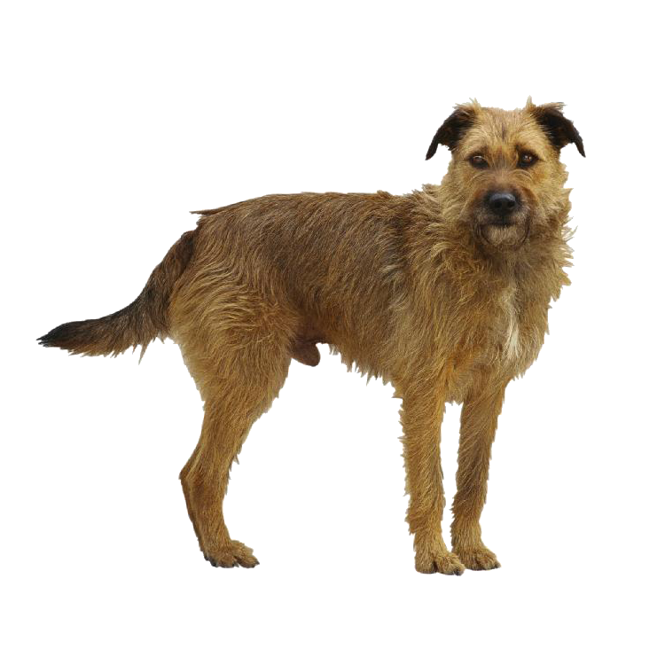
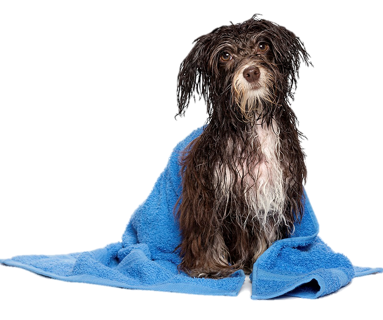
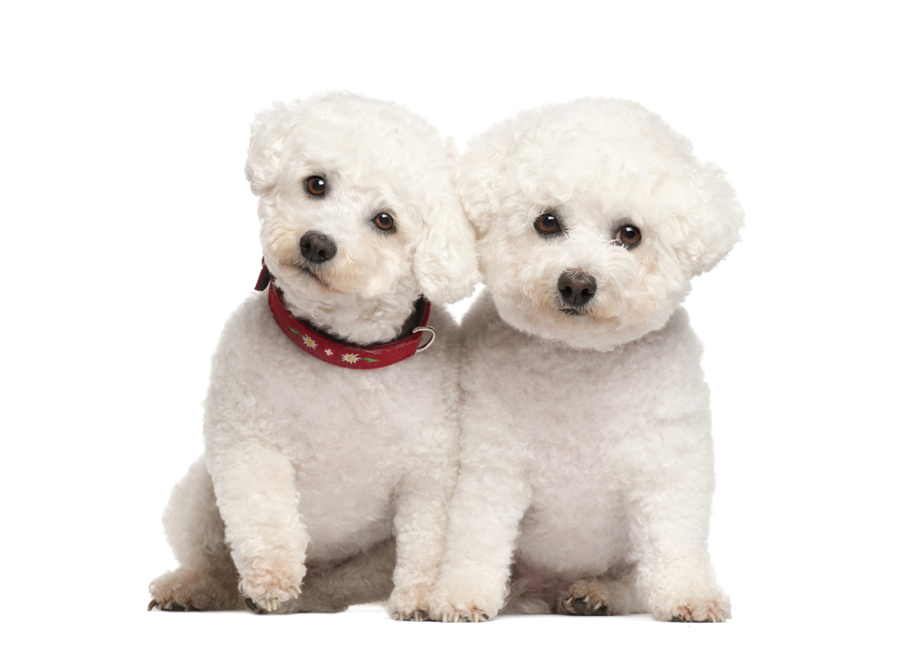
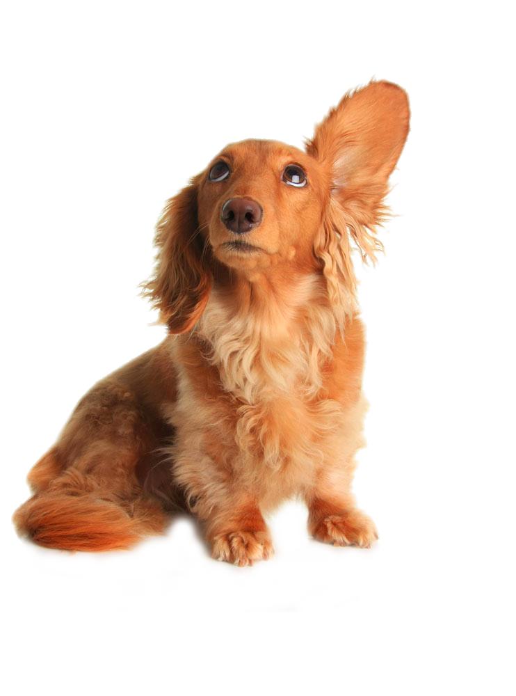
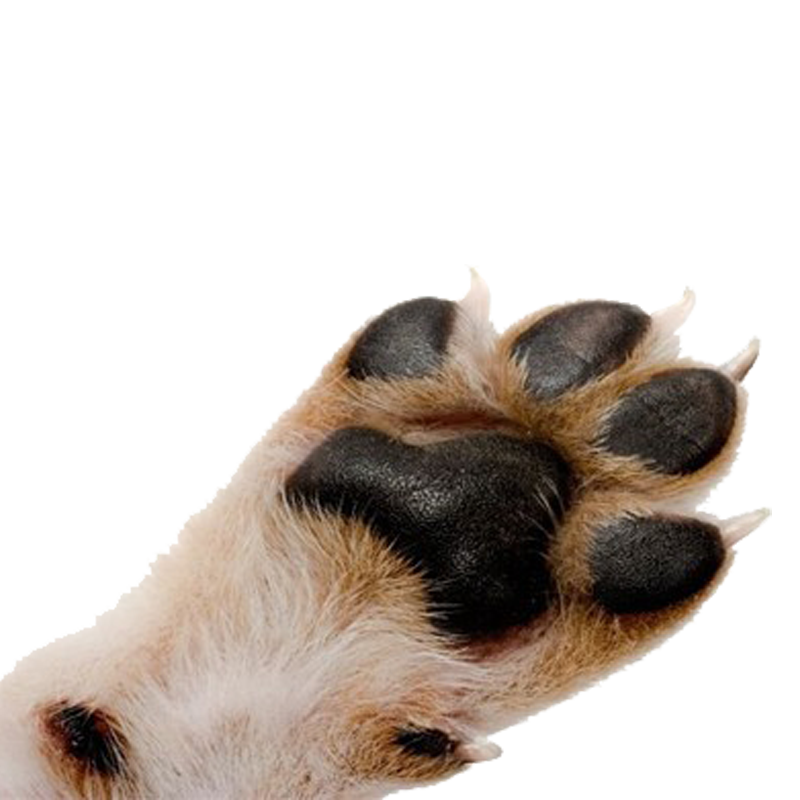

-
Corte y Baño Completo
Incluye baño con shampoo natural, secado, corte a máquina y/o tijera, peinado, limpieza de oídos y corte de uñas.
-
Baño Completo

Incluye baño con shampoo natural, secado, peinado, limpieza de oídos y corte de uñas.
-
Baño HipoAlergénico
Pensado especialmente para mascotas con piel delicada. Incluye baño con shampoo hipoalergénico, secado y peinado.
-
Corte y Baño Higiénico Sanitario
Se realiza un baño con productos especiales que previenen la presencia de pulgas, piojos y garrapatas y un corte especial que mantiene el pelaje limpio, sano y saludable.
-
Cortes de Raza

Schnauzer, Caniche, Cocker Spaniel, Cocker Americano, Golden Retriever, Bichón, Border Collie, Fox Terrier, Yorkshire Terrier, Boyero de Berna, Chow Chow, Husky Siberiano, Pastor Alemán, Pastor Inglé, otras razas.
-
Baño para Pequeñas Mascotas

Disponible para mascotas de hasta 6 meses. Un delicado baño a mano, con shampoo natural y un suave secado para mimar a tu cachorro.
-
Limpieza de Lagrimales

Limpia la oxidación que se produce en los pelos alrededor de los lagrimales de determinadas razas.
-
Limpieza de Oídos
Previene infecciones en los oídos y mantiene la extraordinaria capacidad auditiva que distingue a los perros.
-
Corte de Uñas
Previene heridas e infecciones por rotura de uñas y mantiene suaves las patitas de tu mascota.